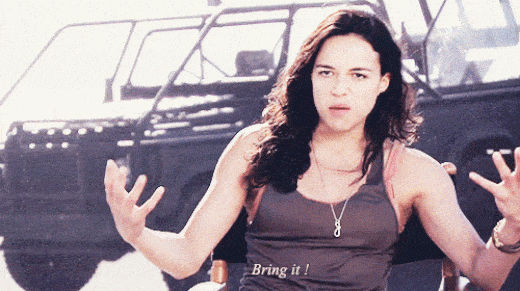

Jared is a middle-aged guy full of old-man wisdom. He's best described as a gentlemen scholar and a man among men. You can read his writing at his site: Legends of Men


Here’s a chicken or egg question for you: what came first, Hollywood’s decision to depict female action heroes that outclass their male counterparts or men’s inclination to believe women can outclass men in the physical arena?
Stated in other terms, is Hollywood trying to influence men to put women on pedestals or were men already putting women on pedestals and Hollywood is just selling to that market?
Other forms of media were already equating women to men in typically male-dominated fields well before Hollywood caught on and made their own trend. More specifically, ventures involving high risks, high rewards, physicality, and danger are almost universally performed by men. We are inherently better suited to those types of ventures. It’s in our testosterone. Yet other forms of media made women the central figures in such ventures.

Video games and comic books have featured female action heroes prominently for years. The nerds who consume those media have passively accepted the notion that males and females are equally capable of performing typically male feats. Hollywood started making movies based on video game and comic books thereby exposing those same messages to average movie goers.
Now the average blue pill guy has no problem seeing films with female action heroes because he’s seen them in Resident Evil and The Avengers. Whereas twenty years ago it would’ve been pretty hard to suspend that much disbelief, nowadays it’s just another blockbuster. Who are Hollywood’s tools being used to push this message?
Without a doubt the most prominent female action hero in film, Charlize Theron is Hollywood’s go-to girl. Sometimes they put her next to male action stars to show that she is equal to them (Mad Max: Fury Road or Hancock). Other times Hollywood gives her the sole action hero role (Aeon Flux or Atomic Blonde). In an odd twist, Theron has lately been hinting at being a lesbian, telling some Hollywood “reporter” that she has “swam in the ladies pool.” I can only guess she is playing to a fanbase there.
The man has directed relatively few films but they’ve all been pretty big at the box office. More importantly, many of his films contain porn for leftists. Django Unchained was all about evil white men getting what they deserved. Inglorious Basterds featured Jews going undercover and killing Hitler. I’m not a fan of slavery or Nazis, but these are low-hanging fruit in the easy-to-hate category. The purpose of the films are masturbatory rather than to tell great stories.
Jackie Brown was his first attempt at a female action hero in Pam Grier, but that wasn’t fully fleshed out at the time. Kill Bill is what really set him apart in the female action hero genre.
Death Proof was next. It featured a serial killer of women (Kurt Russell) finally meet his match in a group of tough-as-nails women. Long story short, he’s no match for broads that tough.
The Kill Bill films grossed over $330 million combined. They were huge. Supposedly these films were heavily influenced by old Chinese Kung Fu movies but I’ve seen many of those and very few starred women. Kill Bill’s protagonist and most of the antagonists are all women. The plot of the film is relatively simple. Bill is the head of some type of assassination organization. He has five assassins that work for him, four of whom are women. Four assassins attempt to kill the fifth, who was nine months pregnant at the time. It turns out she didn’t die and she spends the rest of the story getting revenge.
The only edge a beautiful female assassin would have over a male counterpart is her seduction capabilities. Yet those are rarely used in Kill Bill. Instead the women go toe-to-toe with men and each other (their only true rivals) using swords. Uma Thurman even kills 80 Yakuza men as a warm up to fighting two women.
While Charlize Theron is still Hollywood’s action hero darling, Scarlett Johansson is the future. She’s already played Black Widow in numerous Marvel movies. Lately she’s been in Lucy and The Ghost in the Shell. Scarlett is definitely hot, much hotter than Theron, but that just makes it harder to believe that she is an action star. Whereas Theron takes on masculine looks and attempts to achieve some muscularity, Scarlett Johansson just has an attractive feminine figure.
He’s the director/screenwriter/producer behind many action films of varying quality, many of whom have female action heroes. In some there is still a male hero (The Fifth Element, or Valerian and the City of a Thousand Planets) but others have just the girls (Lucy, Le Femme Nikita, The Messenger: The Story of Joan of Arc).
Jolie has been the star or co-star of five live action films. While that’s something in itself, her most influential female-action-hero movies are the animated Kung Fu Panda films. In those, Jolie is the voice of the most deadly warrior in a group of animal martial artists. What are the boys who see the the female, Jolie-voiced warrior outclass the other male characters supposed to believe about the fighting abilities of both men and women?

She’s been in a handful of Fast & Furious movies, a handful of Resident Evil movies, Swat, Avatar, Girl Fight, etc. In each of these films Hollywood really pushes the message that women are just as physically strong, daring, ready to fight, and even as stoic as men.
This list is by no means exhaustive. So many films put the badass female we wouldn’t normally accept next to the badass dude we would (like Milla Jovovich next to Bruce Willis in The Fifth Element). This serves to makes us believe that women can do everything men can do despite their lack of testosterone. Twenty to thirty years ago your average guy wouldn’t have bought a ticket to be force-fed that message, but because nerd stuff in film has become popular, and nerds are beta males more than willing to receive that message, the average guy now also gets that message and over time comes to accept it.
In that way the beta males can exert influence over the average, blue pill guys, taking them further down the blue pill rabbit hole without their even knowing it.
For more from Jared Trueheart on the roles of men and women I literature and film check out his writing at Legends of Men.